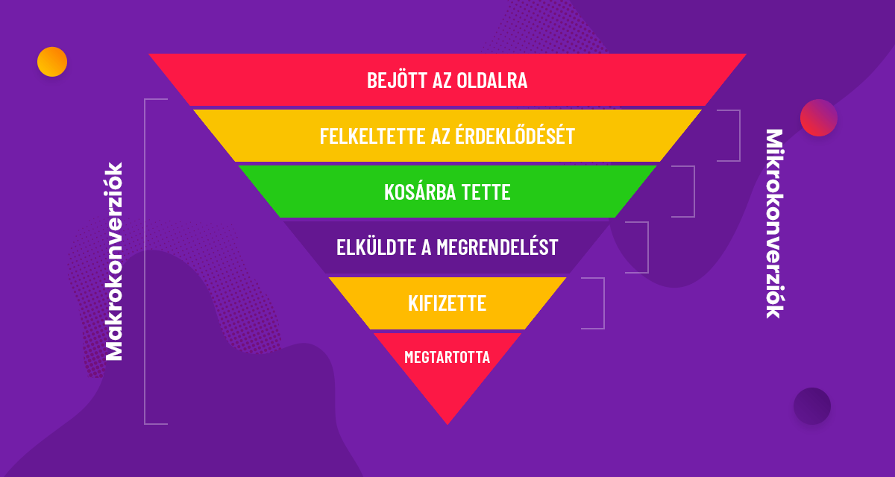

Optimalizálás
Ezt a kurzus az Optimalizálás alapjait tartalmazza.
Tematika
- Történeti áttekintés. Optimalizálási modellek osztályozása
- Lineáris algebrai összefoglaló, pivotálás, bázistranszformáció. Konvex halmazok.
- A lineáris programozás alapfeladata. Grafikus megoldási módszer
- A szimplex módszer.
- Dualitási problémakör. Érzékenységvizsgálat.
- Hiperbolikus programozási feladat megoldása szimplex módszerrel. Első zárthelyi.
- Egészértékű lineáris programozás.
- Nevezetes integer programozási feladatok.
- Szállítási feladat.
- Hozzárendelési probléma.
- Bevezetés a nemlineáris optimalizálásba.
- NLO feladatok egyenlőségi és egyenlőtlenségi feltételekkel. Második zárthelyi.
- Optimalizálási feladatok megoldása Excellel.
- Pótzárthelyi.